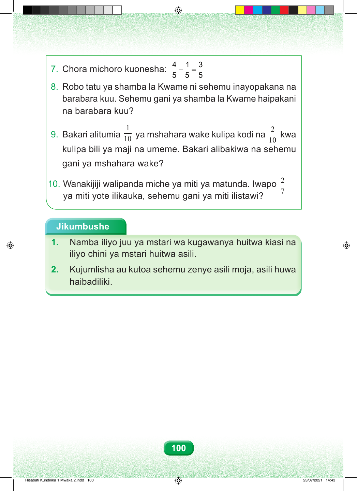

Swali namba saba. Chora michoro kuonesha: nne ya tano kutoa moja ya tano, sawa sawa na tatu ya tano. Swali namba nane. Robo tatu ya shamba la Kwame inapakana na barabara kuu. Sehemu gani ya shamba haipakani na barabara kuu? Swali namba tisa. Bakari alitumia moja ya kumi ya mshahara wake kulipa kodi, na mbili ya kumi kulipa bili ya maji na umeme. Alibakiwa na sehemu gani ya mshahara? Swali namba kumi. Wanakijiji walipanda miche ya miti ya matunda. Iwapo mbili ya saba ya miti yote ilikauka, sehemu gani ya miti ilistawi? Jikumbushe Jambo la kwanza. Namba iliyo juu ya mstari wa sehemu huitwa kiasi; iliyo chini huitwa asili. Jambo la pili. Unapojumlisha au kutoa sehemu zenye asili moja, asili haibadiliki. 100 Hisabati Kundirika 1 Mwaka 2.indd 100 23/07/2021 14:43